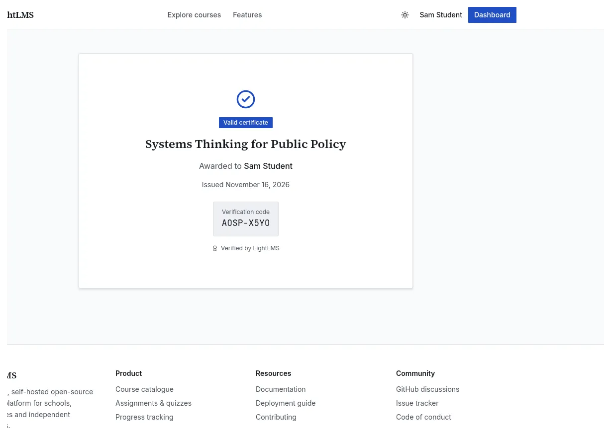
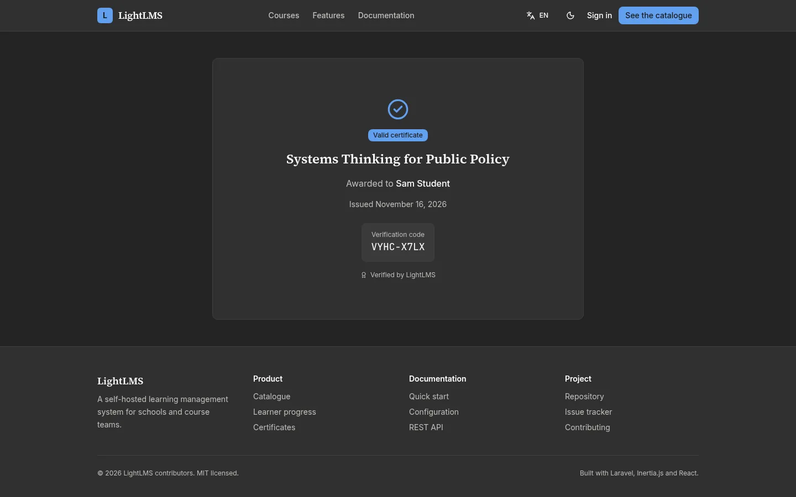

Using it
Certificates
A course can issue a certificate when a learner finishes it. The certificate carries the name of the learner at the moment it was issued, a date, and a public code that anybody can check.
The completion rule
Each course has one rule. The teacher sets it on the Certificates page of the course.
| Rule | A learner is finished when |
|---|---|
| Every activity completed | The progress of the course reaches 100%. |
| A minimum grade | The final grade reaches the percentage the teacher set. |
| Approved by the teacher | The teacher presses Issue. |
A course without a rule uses every activity completed, which is the safest default: a certificate never appears earlier than the work is done. The rule can be switched off for a course, and nothing is issued while it is off.
Where a certificate comes from
| Trigger | What happens |
|---|---|
| The learner completes the last activity | The certificate is issued if the rule allows it. |
| A submission is graded | The certificate is issued if the rule allows it. |
| The teacher presses Issue | The certificate is issued, whatever the rule says. |
A learner never gets two certificates for the same course.
The pages
| Page | Who can open it |
|---|---|
/certificates |
The signed-in person, for their own certificates. |
/certificates/{code} |
The holder of the certificate, and the teachers of the course. |
/certificates/verify/{code} |
Anybody, with the code. |
/teaching/{course}/certificates |
The teachers of the course. |
Verification


Every certificate has a code, for example AOSP-X5YO. The
verification page shows whether the certificate is valid, when it was issued,
and, for a valid certificate, who holds it.
A revoked certificate shows the reason and does not name the learner. A revoked certificate stays in the list of the learner, marked as revoked, so the history is not lost.
Revoking a certificate
A teacher of the course can revoke a certificate with a reason. The reason is stored and shown on the verification page, and the revocation is written to the audit log.
What a certificate does not contain
- A copy of the learner's marks. The certificate says the course was finished, not how it was scored.
- A cryptographic signature. This is a record in the database, not a verifiable document in the Open Badges sense.
- Any personal data beyond the name of the recipient and the course.
Not implemented yet
- PDF download of the certificate.
- Open Badges 2.0 issuance, so the certificate can go into a badge wallet.
- A webhook that tells another system when a certificate is issued.